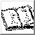

 EinsatztagebuchDas Portal Einsatztagebuch gibt jedem Benutzer die Möglichkeit das aktuelle Einsatztagebuch zu lesen, zu drucken oder es als PDF zu exportieren. Weiterhin können berechtigte Benutzer festlegen welche Informationen das Einsatztagebuch enthalten soll. Der Reiter "Einsatztagebuch"
Druckvorschau Das erzeugen des ETB kann einige Sekunden in Anspruch nehmen. Das ETB wird dynamisch erzeugt. Es kann in der Druckansicht nicht verändert werden. Vorraussetzung für das Anzeigen des ETB ist ein korrekt installierter Adobe Acrobat Reader 6. Die Bedienung erfolgt analog zum Acrobat Reader.
Der Reiter: "Systemereignisse auswählen"
In diesem Reiter werden alle vom System generierten Ereignisse dargestellt.
Dies beinhaltet beispielsweise eingegangene Meldungen, Aufträge oder Funksprüche.Der Benutzer kann mit Hilfe der Auswahlliste (linke Bildhälfte) festlegen, welche Ereignisse ins ETB übernommen werden sollen. Einmal dem ETB hinzugefügte Einträge können nicht wieder entfernt werden! In der Auswahlliste markierte Eintrage werden rechts oben angezeigt. Zu dem aktuell ausgewählten Systemereignis können Kommentare eingesehen, sowie neue Kommentare erstellt werden.(rechts unten). Das Kommentieren von Kommentaren ist nicht möglich. Verwalten der Systemereignisse Der Reiter: "Zusatzeinträge bearbeiten"
In diesem Reiter kann der Benutzer zusätzliche Einträge ins Einsatztagebuch
hinzufügen. Diese werden dann automatisch in das ETB übernommen.
Dabei kann der Benutzer alte Einträge auswählen (linke Bildhälfte) um diese einzusehen (Anzeige rechts oben) und wenn gewünscht
zu kommentieren (rechts unten).
Erstellter Zusatzeinträg nach dem Speichern Zurück project.ELS version 1.0 |